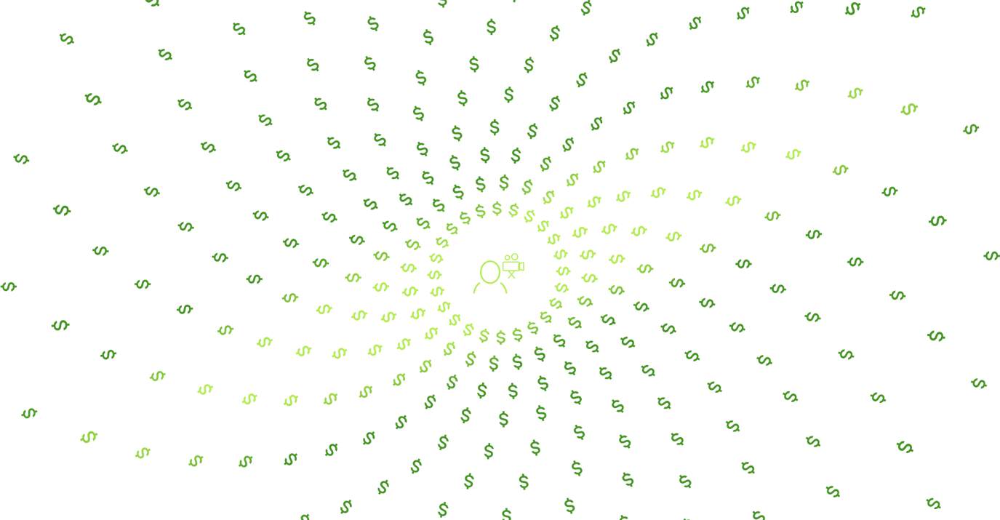
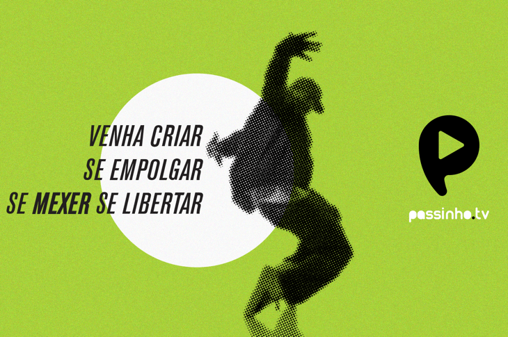
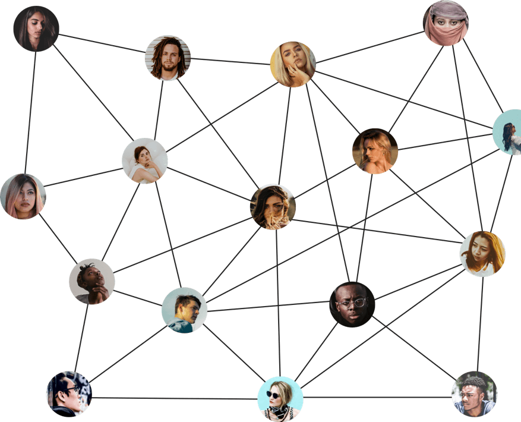
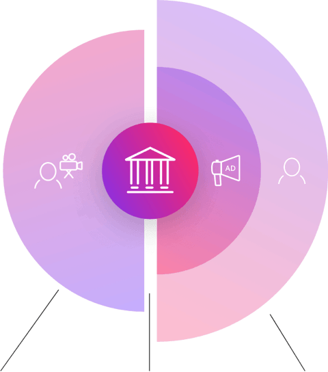
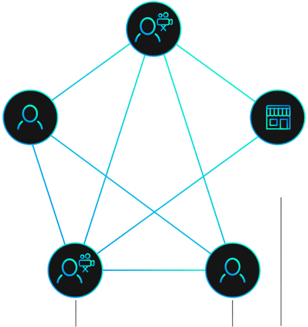
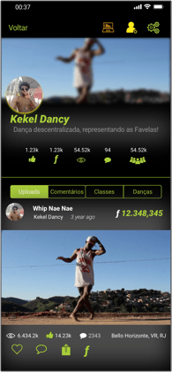
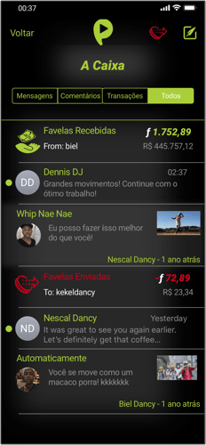
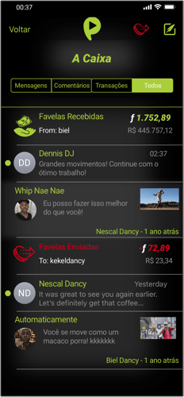
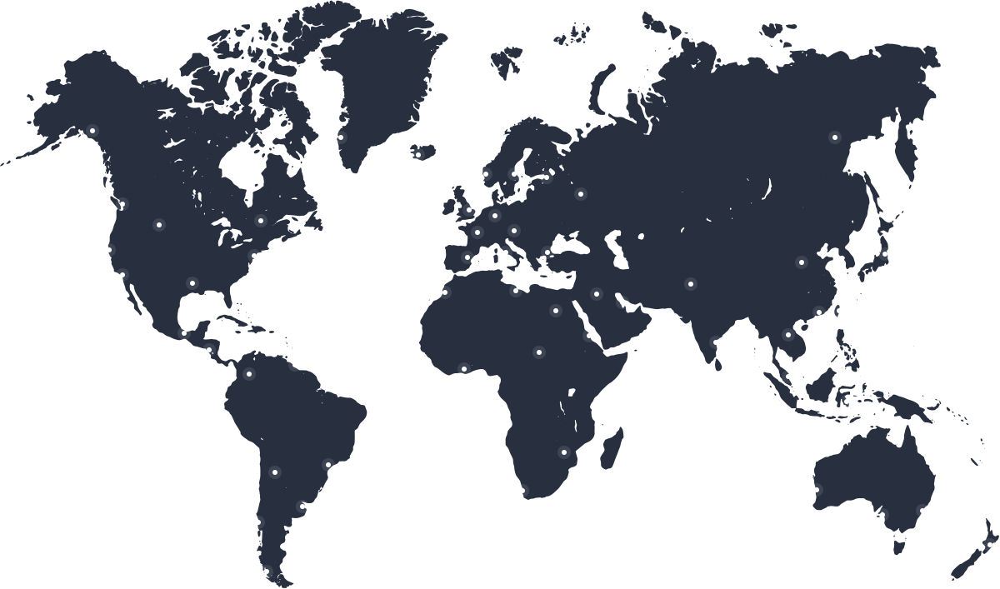

Passinho.tv é uma rede descentralizada centrada em torno de Passinho
Isso é potencializado pelo compartilhamento de conteúdo blockchain e peer-to-peer.
O Problema
Os incentivos entre criadores de conteúdo, seus espectadores e anunciantes são inerentemente desalinhados. Os espectadores são bombardeados com anúncios irrelevantes. Os criadores sacrificam a qualidade do conteúdo pela quantidade de visualizações. Os anunciantes perdem devido a ineficiências no alcance e à fraude fraudulenta.
Dinheiro dos anunciantesa
Plataforma de Vídeo + Middleman + Fraude de Anúncios + Impostos + Design Ineficiente
Menos dinheiro para criadores, baixo retorno sobre o investimento para investidores

Os criadores obtêm múltiplos fluxos de receita sem que os intermediários de lucro obtenham intermediários.
A Solução
Uma plataforma de vídeo descentralizada para criadores, por criadores. Os criadores constroem sua tribo de fãs dedicados e recebem o Patreon como suporte através de micropagamentos e assinaturas sem atrito. Os criadores também podem assinar contratos de patrocínio que estejam alinhados com os melhores interesses de seus fãs e sem intermediários.
Por que Passinho?
Estamos construindo o Passinho.tv porque acreditamos que todos, não importa onde você cresceu ou mora, devem ter a oportunidade de compartilhar seu trabalho criativo, descobrir seus fãs e ser pago, sem intermediários corporativos, anúncios incômodos ou invasão de privacidade pessoal.

De Pessoas,
Para Pessoas
Para Pessoas
Passinho.tv opera como uma organização descentralizada sem intermediários. A receita e a economia de custos dessa configuração são repassadas aos criadores e fãs.
Algumas das novas tecnologias que usamos:
Contratos inteligentes no blockchain
PoA: prova de disponibilidade
Compartilhamento de vídeo P2P e IPFS
WebAssembly, WebRTC
VP9, DASH (Adaptive Streaming)
HLS (HTTP Live Streaming)

Contratos inteligentes no blockchain
PoA: prova de disponibilidade
Compartilhamento de vídeo P2P e IPFS
WebAssembly, WebRTC
VP9, DASH (Adaptive Streaming)
HLS (HTTP Live Streaming)
COMO FUNCIONA
Plataformas de Vídeo Centralizadas
As atuais plataformas de vídeo estão entre anunciantes, criadores e fãs, e são uma fonte de grandes ineficiências, devido às otimizações de lucro unilaterais.

Criadores
Fãs
Plataforma de vídeo e publicidade
Plataforma descentralizada do Passinho.tv
Fãs e empresas podem se conectar diretamente com os criadores do Passinho.tv para financiar o trabalho criativo. O alinhamento de incentivos deixa todo mundo melhor.
Criadores
Patrocinadores
Fãs

Novos modelos de receita
Os criadores de conteúdo no Passinho.tv são partes independentes, diretamente recompensadas por seus fãs e patrocinadores.
Patronato Por Fãs
Os Fãs podem pagar diretamente aos criadores para financiar seu conteúdo como uma assinatura ou uma dica única. Os criadores podem criar pacotes do tipo Kickstarter para financiar conteúdo premium.
Licenciamento de Conteúdo
Se você optar por participar, ajudaremos as pessoas a encontrar seu trabalho e receber o pagamento quando seu trabalho for usado em projetos comerciais.
Recompensas Para Curtidas
O dinheiro é dado aos criadores de conteúdo com base em votos positivos dos Fãs participante. Os Fãs também doam dinheiro diretamente aos criadores.
Patrocinado Endossos
Pessoas e empresas podem encomendar conteúdos de criadores específicos / w escrow.
Pronto para mais?
Inscreva-se para receber atualizações e receba um baralho completo descrevendo o produto Passinho.tv. Também lhe enviaremos o white paper técnico.
Junte-se a nós no Whatsapp em Português
Me Inscreva!
Join us on Telegram in English


Uma Palhinha do Aplicativo

Antifrágil por design
A rede descentralizada do Passinho.tv se torna mais rápida e mais capaz com todos os nós ponto-a-ponto que se juntam. O armazenamento de vídeo de longo prazo é incentivado pelo mercado de hospedagem on-chain. A rede é antrifragile por design - quanto maior, melhor será executado.
